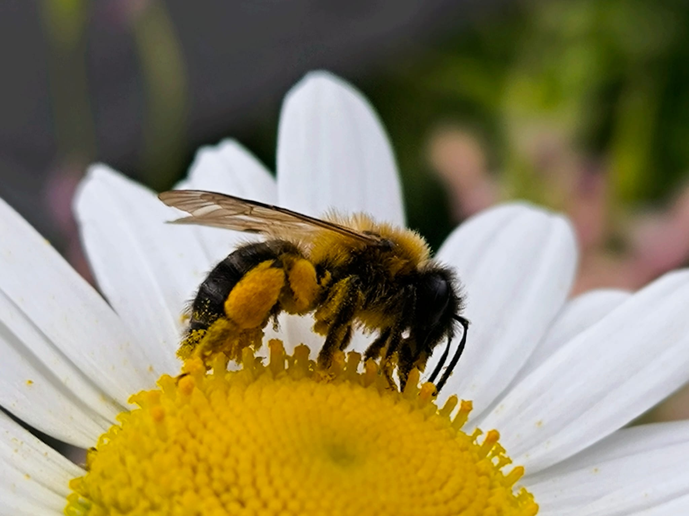

Raw Honey from Kępa Redłowska Nature Reserve
Harvested from our family apiary on the coastal cliffs of Gdynia — where Baltic sea breeze meets protected linden canopies, black locust acacia, and wild meadows. Four generations of beekeeping knowledge since 1923.
Four Generations of Craft
From great-great-grandmother Jadwiga to Jarek — over a century of family wisdom on hive harmony, forage rhythms, and gentle beekeeping.
Coastal Microclimate
Linden, black locust acacia, evening primrose, and cornflowers of Kępa Redłowska give the honey a distinctive floral bouquet and subtle salinity.
Raw & Unadulterated
Straight from the comb — unheated, unpasteurised, and cold-creamed to preserve living enzymes, active pollen, and delicate natural aromas.
Seasonal Harvests
Seven raw single-origin and nectar honeys. Each batch reflects the authentic weather, soil, and floral bloom of the reserve.

A heritage that refuses to be rushed
It all began with great-great-grandmother Jadwiga, who kept the family's first hives. Today, Jarek tends the colonies on the quiet edge of Kępa Redłowska Nature Reserve — where city life gives way to sea breeze and protected wild meadows.